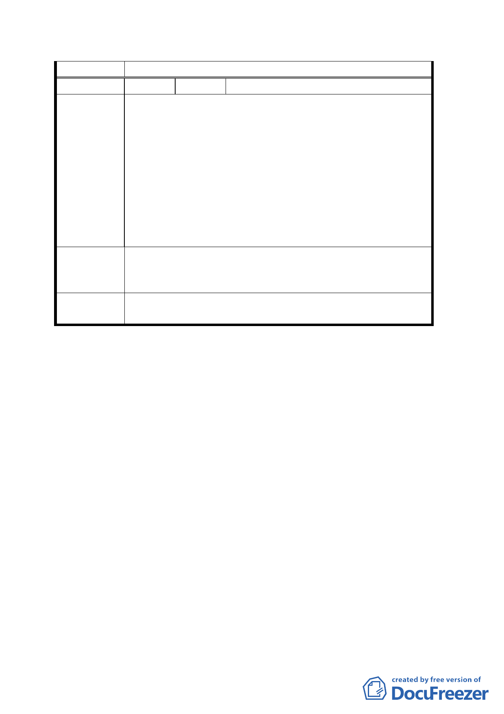

本項錄請市府參考。
編 號 ２ 陳情人 一群保安宮信徒
一、保安宮中間哈密街路段原本即是保安宮廟埕一部份，
因數年前市府「萬大計畫」開闢哈密街，於是將保安
宮一分為二，影響保安宮整體發展，此為一項錯誤政
策決定，希望藉由此次都市計畫變更加以彌補。
陳情理由
二、另一實例為原本保安宮西側亦計畫開闢哈密街 59 巷 2
弄及酒泉街 103 巷兩條巷道穿越保安宮，後因發現政
策錯誤，現已停止開闢。
三、保安宮中間哈密街路段變更為廣場用地，地方里民可
藉由重慶北路 3 段 295 巷 21 弄替代道路出入，並不影
響交通動線。
建議市府能將保安宮東側（即大龍國小西側、哈密街以北）
建 議 辦 法 的大龍街路段及保安宮中間哈密街路段一併規劃變更為廣
場用地。
委員會議決 本案道路用地變更為廣場用地之範圍擴大至保安宮東側大
議 龍街部分路段及保安宮南側哈密街路段。
討論事項三
案名：修訂臺北市基隆河（中山橋至成美橋段）附近地區細部
計畫娛樂區（供觀光旅館使用）街廓編號 C2 基地土地使
用分區管制規定計畫案
說明：
一、 本案係市府以 94 年 3 月 7 日府都規字第 09405869703 號
函送到會，並自 94 年 3 月 8 日起公開展覽三十天。
二、申請單位：宜華國際股份有限公司
辦理單位：台北市政府
三、法令依據：都市計畫法第二十四條
四、計畫範圍：詳計畫圖所示
五、變更理由及內容：詳計畫報告書所示
六、公民或團體陳情意見：無
決議：
本案除說明書第四頁肆－五、修正為「本計畫區應透過全街廓
開發整體規劃於基地南側留設 10%以上公共開放空間，供鄰近
三一